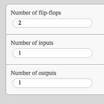
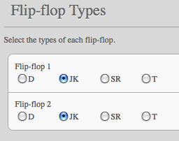
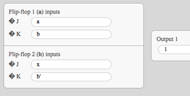
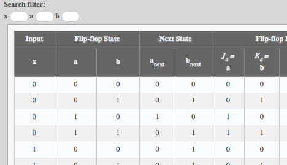

Flip-Flop Logic Simulator
About
from Wikipedia:In electronics, a flip-flop or latch is a circuit that has two stable states and can be used to store state information. The circuit can be made to change state by signals applied to one or more control inputs and will have one or two outputs. It is the basic storage element in sequential logic. Flip-flops and latches are a fundamental building block of digital electronics systems used in computers, communications, and many other types of systems.
Flip-Flop Logic Simulator (FLS) is precisely what its name says it to be: a simulator for the logic of flip-flop circuits. FLS is written in JavaScript with an HTML/CSS frontend and some jQuery thrown in for good measure.
How-to
Using FLS is very straightforward. The onscreen instructions should suffice even for a novice user. This how-to manual is included just in case.
To start using the simulator, go to the Simulator page and click start.

You will then be asked to enter the number of variables e.g., flip-flops, inputs and outputs.
Enter your desired number of variables and then click next. You will then be asked what type of flip-flop will be used for each flip-flop circuit (dependent on your previous input).
Click on the radio button for the type of flip-flops and then click next. You will then be asked for the functions.
For contextual help on entering the functions, you may click the help button labeled as ?
Once you have entered the functions, click next. The last part will be displayed. It shall contain the tables for inputs, present and next flip-flop states, flip-flop inputs and the outputs. There is also a search filter for viewing more specific parts of the tables.
Miscellaneous
Listed below are the known issues for FLS and their corresponding solutions or explanations.
Compatibility. FLS is written in HTML, CSS and JavaScript. It should be able to run on any operating system that has a modern JavaScript-enabled browser.
Performance. All operations are done on the client-side. The performance of FLS will depend on the amount of inputs and the processing power of your machine.
SR Flip-Flop for (1,1). An SR flip-flop with a (1,1) input has an indeterminate output (X). However, FLS was made to simulate, and simulate it will. The unpredictability of the SR output is interpreted by FLS as a random value from 0 to 1.
Legal / Licensing. FLS is free and open-source software, but we still haven't decided on a license with which to release it. Until then, permission is granted to use, modify and redistribute as long as credit is given where credit is due.